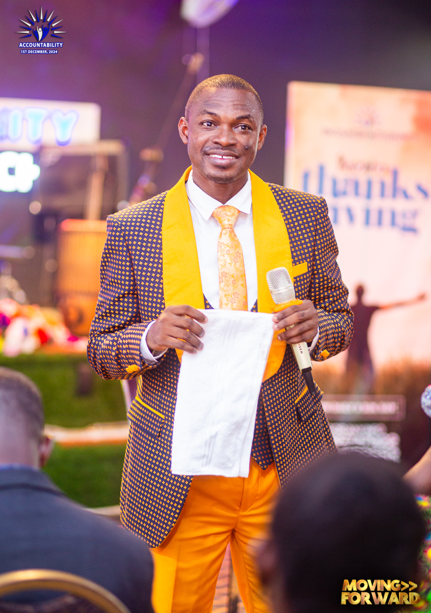

Today, we joyfully celebrate the life of a remarkable servant of God, whose prophetic ministry has been a beacon of light to our church and beyond. You are not just a leader but a vessel chosen by God to bring His message to His people. Through your obedience and unwavering faith, countless lives have been transformed, healed, and drawn closer to the Lord. Your dedication to the divine calling upon your life is an inspiration to us all, and we are so grateful to walk this journey of faith under your guidance.
Your wisdom and counsel have been a source of strength and direction for our entire church family. Whether through your prophetic words, powerful teachings, or personal encouragement, you have consistently reminded us of God’s love and purpose for our lives. The way you selflessly pour into us, seeking nothing but the glory of God, is a testament to your humility and Christlike character. Today, we honor not just the gift of prophecy within you but also the kind and compassionate heart that carries that gift.
As you celebrate another year of life, we pray that God continues to anoint you with His Spirit and empower you for the work ahead. May your days be filled with divine favor, good health, and abundant joy. The Lord who has begun a good work in you will surely bring it to completion. Your faithfulness has not gone unnoticed, and we believe God is preparing even greater things for you and through you.
On this special day, we, your church family, want to reaffirm our love and gratitude for you. We celebrate not just the prophet but the incredible person that you are. You have stood with us in prayer, rejoiced in our victories, and lifted us in times of need. Your life is a constant reminder of God’s power and grace, and we are blessed to call you our leader, mentor, and spiritual father.
May this year bring you closer to the fulfillment of every promise God has spoken over your life. Happy birthday, Prophet! May you continue to walk boldly in your calling and shine as a light for His glory. You are truly special to us and a treasure to the kingdom of God. Celebrate today, knowing you are deeply loved, appreciated, and celebrated!